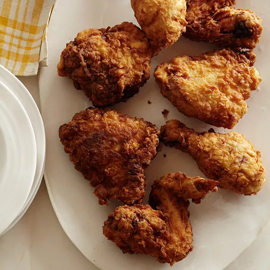

Fried Chicken Recipe

A sugar and salt-spiked whole-milk brine makes this chicken sweet and juicy; a mixture of buttermilk, flour, baking powder, and baking soda yields an extra-crisp crust.
Ingredients
- 1 quart whole milk, divided
- 3/4 cup plus 2 tablespoons kosher salt, divided
- 1/2 cup sugar
- 2 (4-pound) chickens, each cut into 8 pieces
- 2 cups buttermilk
- 2 large eggs, lightly beaten
- 1 teaspoon sweet paprika
- 1 teaspoon hot sauce
- 1/2 teaspoon freshly ground black pepper
- 2 teaspoons baking powder
- 1 1/2 teaspoons baking soda
- About 5 cups all-purpose flour
- 1 quart vegetable oil, for frying
Steps
- In a small saucepan, combine 1 cup of the milk with 3/4 cup of kosher salt and the sugar. Stir over moderate heat just until the sugar and salt dissolve, about 2 minutes. Transfer to a large, deep bowl and add the remaining 3 cups of milk. Add the chicken pieces and refrigerate for 4 hours. Drain the chicken and pat thoroughly dry.
- In a bowl, mix the buttermilk, eggs, 2 tablespoons of salt, the paprika, hot sauce, and pepper. Whisk in the baking powder and baking soda. Put half of the flour in a large bowl. Working with a few pieces at a time, dredge the chicken in the flour, tapping off any excess. Dip the chicken in the buttermilk, letting the excess drip off; return the chicken to the flour and turn to coat. Transfer to a rack. Repeat with the remaining chicken, adding more flour as needed. If the flour becomes too lumpy, sift it.
- Heat the oil in 2 large, deep skillets until shimmering. Working in batches, add the chicken to the skillets in a single layer, without crowding, and fry over moderate heat, turning occasionally, until deep golden and cooked through, 18 to 20 minutes; an instant-read thermometer inserted near the bone should register 160°F. Drain the chicken on wire racks lined with paper towels and fry the remaining pieces. Serve hot or warm.